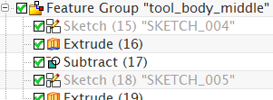
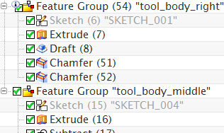

Create a floating feature group
-
Choose Format→Group→Feature Group.
-
In the Feature Group Name box, type tool_body_middle.
-
Verify that the Add Dependencies
 check box is selected.
check box is selected.
-
From the Output list, select Floating Feature Group.
-
In the Features in Part list, double-click SKETCH_004:Sketch(15) and SKETCH_005:Sketch(18).
-
Verify that the Embed Feature Group Members
check box is selected.
-
Click OK to create the new feature group.
-
In the Part Navigator, expand the tool_body_middle feature group.

Notice that the feature group does not have a timestamp and the members of the group have retained their original timestamps.
-
In the Part Navigator, select the tool_body_middle feature group and drag it after tool_body_right(54).

Since this is a floating feature group, it has no timestamp. It can be reordered anywhere in the feature list and the members will maintain their original timestamps.